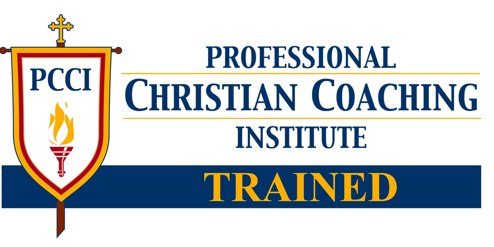

Joe Ratterman - Coach And Mentor
Experienced Leader
Mr. Ratterman has worked in both large and small, private and public, as well as highly regulated companies. Joe was a founding employee of a hugely successful startup. He finished his corporate career as Chairman and CEO of a multi-billion dollar global financial technology firm.
Board Professional
Mr. Ratterman is has been involved with both corporate and non-profit boards, including Cboe Global Markets, Axoni, C2FO, Bats Global Markets, and Angel Flight Central. Joe's deep and continuing experience with board dynamics and governance can be uniquely valuable to Water Stone clients.
Recognized Influencer
Joe has been extensively covered by local and national media, formally advised the SEC on U.S. Equity Market Structure, testified before congress multiple times representing the securities industry, included in Institutional Investors Tech 50, among Ingrams Top 250 Most Powerful People, a regional winner of the Ernst & Young Entrepreneur of the Year award, and a Guinness World Record holder.
Man of Faith
Most Importantly, Joe is a loving husband blessed with an amazing wife, proud father of awesome adult kids, caring grandfather, and a faithful follower of Christ.
Joe and his wife Sandy have labored together for many years in various ministries and charities in the Kansas City area, one of which they founded, putting their combined time, talent, and treasure back into the community.

Perpetual Student
While Joe has mentored numerous individuals over the course of his career, he is committed to honing his skills through ongoing studying of both classic and contemporary coaching resources. In addition, he completed the Essentials of Leadership Coaching program, a four month intensive coaching skills curriculum administered through PCCI. The course is aligned with the standards of the International Coach Federation (ICF).